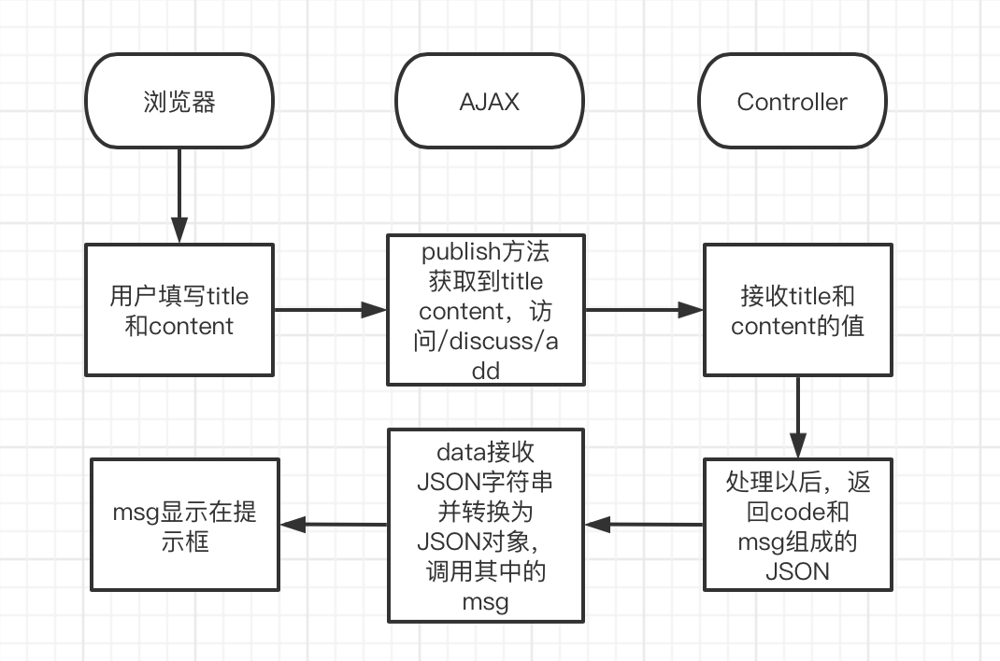

前言
本篇文章记录了使用AJAX实现异步发布帖子和开发帖子详情模块的流程
AJAX
Asynchronous JavaScript and XML
- 异步的JavaScript与XML
- 使用AJAX，网页能够异步呈现更新，不需要刷新网页
- JSON目前比XML更普遍
AJAX基本结构
1
2
3
4
5
6
7
8
9$.ajax({
url:"发送请求（提交或读取数据）的地址",
dataType:"预期服务器返回数据的类型",
type:"请求方式",
async:"true/false",
data:{发送到/读取后台（服务器）的数据},
success:function(data){请求成功时执行},
error:function(){请求失败时执行}
});post方式的简单结构
1
2
3
4
5
6
7
8
9
10$.post(
//1.路径
//2.要向服务器提交的数据（js对象）
//就是controller要接收的数据
//3.回调函数(匿名）
//当服务器响应后，服务器会调用这个回调函数，data就是服务器返回的数据
//传回来的是JSON字符串，如果需要JSON对象，可以用
date = $.parseJSON(data);转换成JSON对象
);
把数据转换为JSON的工具
需要先配置Fastjson包
异步返回给浏览器的可能有这几种数据：
- 返回码： 表示成功失败等信息
- 提示： 提示信息
- 业务数据
所以把这几种情况服务器的返回数据，都用这个工具转换成json数据，可以在前端使用。1
2
3
4
5
6
7
8
9
10
11
12
13
14
15
16
17
18
19
20
21
22
23
24
25
26
27
28
29
30
31
32
33/
把传入数据转换成json数据
编号
提示
业务数据
/
public static String getJSONString(int code, String msg, Map<String, Object> map) {
JSONObject json = new JSONObject();
json.put(“code”, code);
json.put(“msg”, msg);
if(map != null) {
for(String key : map.keySet()) {
json.put(key, map.get(key));
}
}
return json.toJSONString();
}
//重载
public static String getJSONString (int code, String msg) {
return getJSONString(code, msg, null);
}
//重载
public static String getJSONString (int code) {
return getJSONString(code, null, null);
}
使用AJAX
DAO层
mapper
1
int insertDiscussPost(DiscussPost discussPost);
mapper映射器
1
2
3
4<insert id=“insertDiscussPost” parameterType=“DiscussPost”>
insert into discuss_post (<include refid=“insertFields”></include>)
values(#{userId},#{title},#{content},#{type},#{status},#{createTime},#{commentCount},#{score})
</insert>
业务层
1 |
|
视图层
Controller
1
2
3
4
5
6
7
8
9
10
11
12
13
14
15
16
17
18
19
20
21
22(path = “/add”, method = RequestMethod.POST)
public String addDiscussPost (String title, String content) {
User user = hostHolder.getUser();
//403代表没有权限
if (user == null) {
return CommunityUtil.getJSONString(403, "你还没有登录!");
}
DiscussPost post = new DiscussPost();
post.setUserId(user.getId());
post.setTitle(title);
post.setContent(content);
post.setCreateTime(new Date());
discussPostService.addDiscussPost(post);
//报错统一处理
return CommunityUtil.getJSONString(0, "发布成功");
}JS
点击发布按钮的时候访问publish方法1
2
3$(function(){
$(“#publishBtn”)”click(publish);
});
publish方法内容1
2
3
4
5
6
7function publish() {
$("#publishModal").modal("hide");
$("#hintModal").modal("show");
setTimeout(function(){
$("#hintModal").modal("hide");
}, 2000);
}
点击发布按钮后，先把发布框隐藏，
然后出现提示框，两秒后提示框也隐藏
- 异步后完整的JS
1
2
3
4
5
6
7
8
9
10
11
12
13
14
15
16
17
18
19
20
21
22
23
24
25
26
27
28
29
30
31
32
33
34$( function(){
$("#publishBtn").click(publish);
});
function publish() {
//关闭发布框
$("#publishModal").modal("hide");
//获取标题和内容的值
var title = $("#recipient-name").val();
var conntent = $("#message-text").val();
//发送异步请求post
$.post(
//1.路径 2.向服务器提交的数据 3.回调函数（服务器返回的数据）
CONTEXT_PATH + "/discuss/add",
{"title":title,"content":content},
function (data) {
data = $.parseJSON(date);
//在提示框中显示返回消息
$("#hintBody").text(data.msg);
//显示提示框
$("#hintModal").modal("show");
//出现提示框并在两秒后关闭
setTimeout(function(){
$("#hintModal").modal("hide");
//成功后刷新页面
if(data.code == 0) {
window.location.reload();
}
}, 2000);
}
);
}
AJAX异步消息全部流程
用户填写title 和content并点击发布按钮—->
访问publish方法—->
publish方法获取title和content的值—->
访问Controller(/discuss/add)并传入title和content的值—->
Controller处理帖子并返回code和msg数据(转换成JSON）——>
data接收到JSON字符串并转换成JSON对象—->
方法中调用JSON对象中的msg并且显示在提示框—->
两秒后提示框关闭（如果发布成功，就重载到首页）
画了个图，更方便理解
帖子详情
Mapper
1
2//查询特定帖子
DiscussPost selectDiscussPostById(int id);映射器
1
2
3
4
5<select id=“selectDiscussPostById” resultType=“DiscussPost”>
select <include refid=“selectFields”></include>
from discuss_post
where id = #{id}
</select>
Service
1 | public DiscussPost findDiscussPostById(int id) { |
Controller
1 |
|
模板
index里把帖子的链接改为和Controller相同的路径1
<a th:href=“@{|/discuss/detail/${map.post.id}|}” th:utext = “${map.post.title}”>什么是Ioc？</a>
- discuss-detail.html
先做初始设置1
<html lang=“en” xmlns:th=“http://www.thymeleaf.org”>
CSS、JS、Jquery设置1
2<link rel=“stylesheet” th:href=“@{/css/global.css}” />
<link rel=“stylesheet” th:href=“@{/css/discuss-detail.css}” />
1 | <script src=“https://apps.bdimg.com/libs/jquery/2.1.4/jquery.min.js”> |
1 | <script th:src=“@{/js/global.js}”></script> |
头部尾部复用设置1
2<header class=“bg-dark sticky-top” th:replace=“index::header”>
<footer class=“bg-dark” th:replace=“index::footer”>
- thymeleaf动态替换
1
2
3
4
5
6
7
8
9
<span th:utext=“${post.title}” >我没说过</span>
<img th:src=“@{user.headerUrl}” class=“align-self-start mr-4 rounded-circle user-header” alt=“用户头像” >
<div class=“mt-0 text-warning” th:utext=“${user.username}”>鲁迅</div>
<div class=“text-muted mt-3”>
发布于 <b th:text=“${#dates.format(post.createTime,’yyyy-MM-dd HH:mm:ss’)}”>2020-07-15 15:32:18</b>
<div class=“mt-4 mb-3 content” th:utext=“${post.content}”>
帖子格式
- 注意要在正文前后加上才能在帖子详情里保留回车和换行符
- 但这时文本在div宽度不足时不会自动换行，而是撞破边界延伸到div外部去，所以还得在css里的content里加上
1
white-space: pre-wrap;